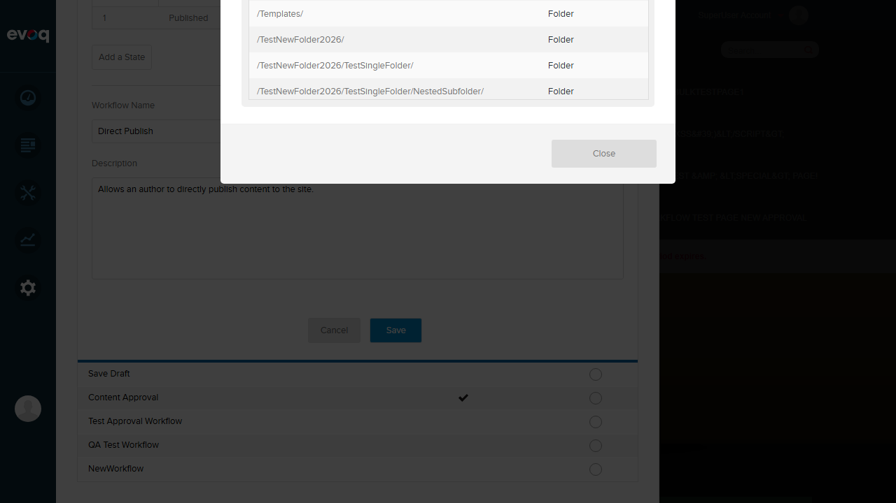
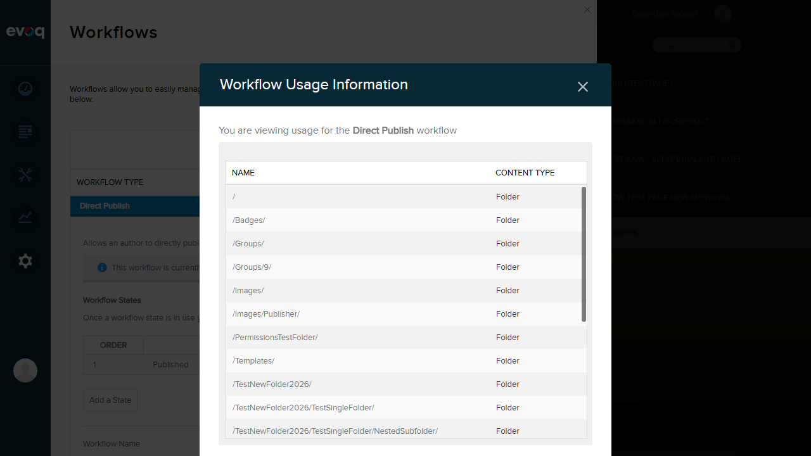
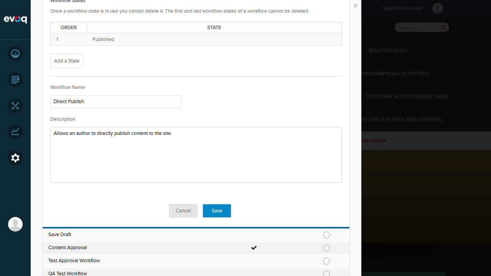
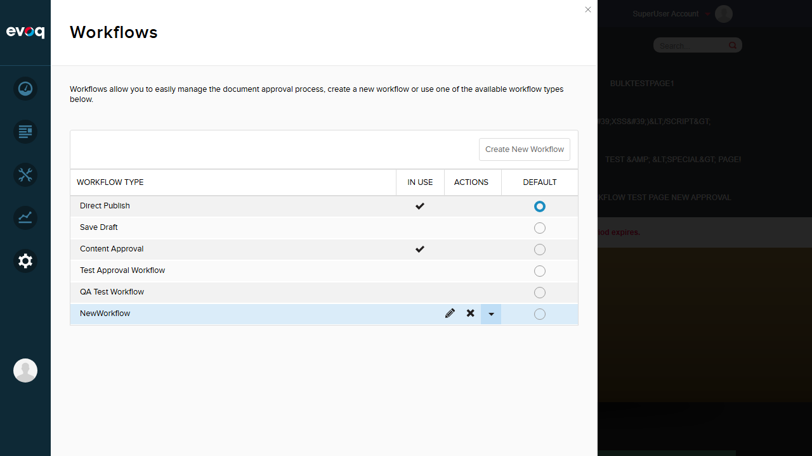

Test Report: Workflow Resources Tracking
Feature Information
Extension: Evoq.PersonaBar.Workflow (PersonaBar Module)
Feature Name: Workflow Resources Tracking
Description: View and track which content items (pages, files) are using specific workflows.
Feature Priority: Medium
UI Location: Settings > Workflow > [Select Workflow] > Resources (View Usage)
Relevant Files: src/Modules/Evoq.PersonaBar.Workflow/Services/WorkflowsController.cs
Test Date: 2026-01-06
Test Summary
| Test Scenario |
Status |
Notes |
| View resources using workflow |
PASS |
Successfully displays resources using the workflow |
| Load more resources with pagination |
FAIL |
No "Load More" button visible in UI despite backend support |
| Verify resource count accuracy |
PASS |
20 resources displayed (pagination limit) |
| Check resource types displayed |
PASS |
Resource types (Folder) displayed correctly |
| Verify resource titles are correct |
PASS |
Folder paths displayed correctly as titles |
| Test empty resource list for unused workflow |
FAIL |
Cannot test - "View Usage" link only appears for workflows in use |
Detailed Test Results
Test 1: View resources using workflow
Status: PASS
Steps Taken:
- Navigated to Settings > Workflow
- Expanded the "Direct Publish" workflow (which shows "This workflow is currently in use")
- Clicked on "View Usage" link
- Observed the "Workflow Usage Information" modal dialog
Expected Result: Modal should display resources (content items) using the selected workflow.
Actual Result: The modal displayed correctly showing:
- Title: "Workflow Usage Information"
- Description: "You are viewing usage for the Direct Publish workflow"
- Table with NAME and CONTENT TYPE columns
- List of 20 resources (folders) using this workflow
Screenshot - Workflow Usage Information Modal:

Test 2: Load more resources with pagination
Status: FAIL
Steps Taken:
- Opened the Workflow Usage Information modal for Direct Publish workflow
- Scrolled through the resources list
- Looked for a "Load More" button at the bottom of the list
- Verified the list ends with a "Close" button only
Expected Result: When there are more than 20 resources, a "Load More" button should appear to load additional resources.
Actual Result: No "Load More" button is visible in the UI. The modal only shows a "Close" button at the bottom.
Code Analysis: The backend code in WorkflowsController.cs (line 225) returns a loadMore flag when the resource count equals 20 (ResourcesSteps). However, the frontend UI does not implement this pagination functionality.
Screenshot - No Load More Button:

Test 3: Verify resource count accuracy
Status: PASS
Steps Taken:
- Opened the Workflow Usage Information modal
- Counted the resources displayed in the list
- Verified the count matches the pagination limit
Expected Result: Resources should be displayed up to the pagination limit (20 items).
Actual Result: Exactly 20 resources are displayed, matching the ResourcesSteps constant in the backend code. Resources displayed include:
- /, /Badges/, /Groups/, /Groups/9/, /Images/, /Images/Publisher/
- /PermissionsTestFolder/, /Templates/, /TestNewFolder2026/
- /TestNewFolder2026/TestSingleFolder/, /TestNewFolder2026/TestSingleFolder/NestedSubfolder/
- /ThisIsAVeryLongFolderName... (truncated), /Users/, /Users/003/, etc.
Note: The UI does not display a total count number, only the list of resources.
Screenshot - Resources List:

Test 4: Check resource types displayed
Status: PASS
Steps Taken:
- Opened the Workflow Usage Information modal
- Examined the CONTENT TYPE column for each resource
- Verified the content types are displayed correctly
Expected Result: Each resource should display its content type (e.g., Folder, Page, File).
Actual Result: All resources in the list display "Folder" as their content type. The CONTENT TYPE column is properly populated and visible.
Screenshot - Resource Types Column:
Test 5: Verify resource titles are correct
Status: PASS
Steps Taken:
- Opened the Workflow Usage Information modal
- Examined the NAME column for each resource
- Verified the resource names/titles are correctly displayed
Expected Result: Each resource should display its name/title correctly.
Actual Result: All resources display their folder paths correctly as titles in the NAME column. Examples include:
- / (root folder)
- /Badges/
- /Groups/
- /Images/
- /TestNewFolder2026/TestSingleFolder/NestedSubfolder/
- Long folder names are also displayed (though may be truncated visually)
Screenshot - Resource Titles:
Test 6: Test empty resource list for unused workflow
Status: FAIL
Steps Taken:
- Navigated to Settings > Workflow
- Identified workflows that are NOT in use (Save Draft, Test Approval Workflow, QA Test Workflow)
- Attempted to find "View Usage" link for unused workflows
- Discovered that "View Usage" link only appears for workflows marked as "in use"
Expected Result: Should be able to view an empty resource list for workflows not currently in use.
Actual Result: Cannot test this scenario. The "View Usage" link only appears for workflows that have the "This workflow is currently in use" indicator. Unused workflows (Save Draft, Test Approval Workflow, QA Test Workflow, NewWorkflow) do not have a "View Usage" option.
Screenshot - Workflow List (showing "In Use" indicators):

Note: This is a design decision - the "View Usage" functionality is only available when there are actual resources to view. However, this means an empty state cannot be verified through the UI.
Observations
- Pagination Backend vs Frontend Mismatch: The backend code (WorkflowsController.cs:225) returns a loadMore flag when exactly 20 resources are returned, indicating more resources are available. However, the frontend UI does not implement a "Load More" button to utilize this functionality.
- View Usage Availability: The "View Usage" link only appears for workflows marked as "in use". This prevents testing the empty resource list scenario and may limit visibility for administrators wanting to verify a workflow has no resources.
- Resource Types: In the test environment, all resources using the Direct Publish workflow were folders. The system supports multiple content types (as seen in the code returning ContentType), but only Folder types were observed.
- No Total Count Display: The UI shows a list of resources but does not display a total count of resources using the workflow. This information might be useful for administrators.
- Content Approval Workflow: "Content Approval" workflow is also marked as "in use" with a "View Usage" link available, indicating the feature works for multiple workflows.
Test Environment
- Website URL: http://localhost:8081
- Browser: Playwright (Chromium)
- Viewport: 1280x720
- User: SuperUser Account (host)
Login Confirmation Screenshot
